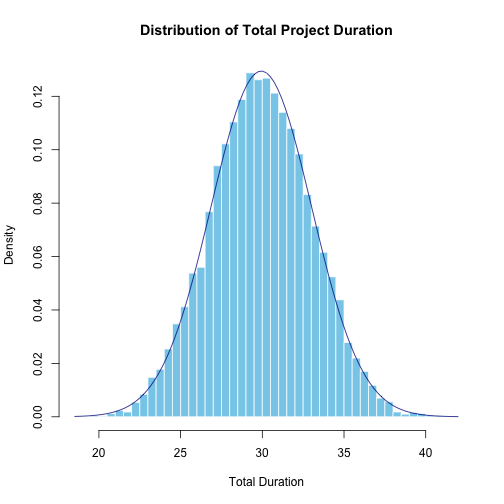

Introduction
Welcome to PRA! This project provides a set of tools for performing Project Risk Analysis (PRA) using various quantitative methods. It is designed to help project analysts assess and manage risks associated with project schedules, costs, and performance.
PRA can be used as a traditional R package with direct function calls, or as an AI-powered risk analysis agent with three input modes:
| Input | Route | When to use |
|---|---|---|
/command |
Deterministic tool execution | Reliable, instant results |
| Natural language with data | LLM selects and calls tools | Exploratory analysis |
| Conceptual question | RAG knowledge base | “What is CPI?”, “How does MCS work?” |
Key Features
AI Agent Framework
-
Slash commands (
/mcs,/evm,/risk, …) — deterministic tool calls that bypass the LLM for instant, reliable results - Natural language interface — ask risk analysis questions in plain English; the agent calls the right tools when you provide numerical data
- RAG-enhanced reasoning — conceptual questions answered from domain knowledge with source citations
- Fully local — runs on your machine via Ollama, no API keys or cloud services
-
Interactive Shiny app — chat UI with
/commands, data upload, inline plots, and model settings - Evaluation framework — measure tool-calling accuracy with vitals
See the Agentic Risk Analysis vignette for details.
Installation
To install the release version of PRA, use:
install.packages('PRA')You can install the development version of PRA like so:
devtools::install_github('paulgovan/PRA')Usage
Traditional R Interface
Here is a simple example of how to use the package for a common PRA task.
First, load the package:
Suppose you have a simple project with 3 tasks (A, B, and C), but the duration of each task is uncertain. You can describe the uncertainty of each task using probability distributions and then run a Monte Carlo Simulation (MCS) to estimate the overall project duration.
To do so, set the number of simulations and describe probability distributions for each work package. In this case, run 10,000 simulations with the following distributions:
num_simulations <- 10000
task_distributions <- list(
list(type = "normal", mean = 10, sd = 2), # Task A: Normal distribution
list(type = "triangular", a = 5, b = 10, c = 15), # Task B: Triangular distribution
list(type = "uniform", min = 8, max = 12) # Task C: Uniform distribution
)Then run the simulation using the mcs function and store the results:
results <- mcs(num_simulations, task_distributions)To visualize the results, you can create a histogram of the total project duration. You can also overlay a normal distribution curve based on the mean and standard deviation of the results:
hist(results$total_distribution,
freq = FALSE, breaks = 50, main = "Distribution of Total Project Duration",
xlab = "Total Duration", col = "skyblue", border = "white"
)
curve(dnorm(x, mean = results$total_mean, sd = results$total_sd), add = TRUE, col = "darkblue")
This will give you a visual representation of the uncertainty in the total project duration based on the individual task distributions. On average, the project is expected to take around 30 time units, but could take as little as 20 or as much as 40 time units.
AI Agent Interface
PRA provides three ways to run risk analyses through its agent framework.
Slash commands (deterministic, no LLM required):
# Monte Carlo simulation
r <- PRA:::execute_command(
'/mcs tasks=[{"type":"normal","mean":10,"sd":2},{"type":"triangular","a":5,"b":10,"c":15}]'
)
cat(r$result)
# Chain: contingency reserve from the MCS result above
r <- PRA:::execute_command("/contingency phigh=0.95 pbase=0.50")
cat(r$result)
# Full EVM analysis
r <- PRA:::execute_command(
"/evm bac=500000 schedule=[0.2,0.4,0.6,0.8,1.0] period=3 complete=0.35 costs=[90000,195000,310000]"
)
cat(r$result)
# Bayesian risk probability
r <- PRA:::execute_command("/risk causes=[0.3,0.2] given=[0.8,0.6] not_given=[0.2,0.4]")
cat(r$result)
# List all commands
r <- PRA:::execute_command("/help")
cat(r$result)Chat interface (natural language, requires Ollama):
chat <- pra_chat(model = "llama3.2")
# Numerical data → LLM calls the appropriate tool
chat$chat("Run a Monte Carlo simulation for a 3-task project with
Task A ~ Normal(10, 2), Task B ~ Triangular(5, 10, 15),
Task C ~ Uniform(8, 12). Use 10,000 simulations.")
# Conceptual question → answered from RAG knowledge base
chat$chat("What is the difference between SPI and CPI?")Interactive Shiny app:
pra_app()The app supports all three input modes — /commands for instant results, natural language for LLM tool calls, and conceptual questions for RAG-powered answers:

Custom Knowledge Base
Extend the agent’s domain knowledge with your own documents:
store <- build_knowledge_base()
add_documents(store, "path/to/project_docs/")More Resources
This project was inspired by the book Data Analysis for Engineering and Project Risk Managment by Ivan Damnjanovic and Ken Reinschmidt and is highly recommended.
Code of Conduct
Please note that the PRA project is released with a Contributor Code of Conduct. By contributing to this project, you agree to abide by its terms.